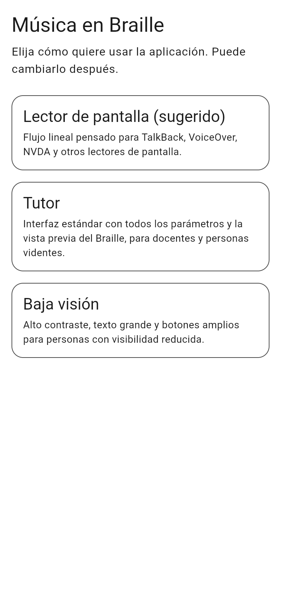
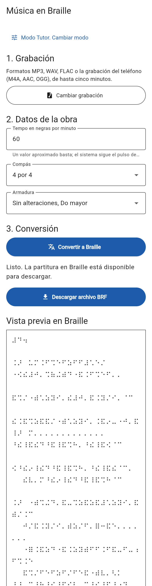
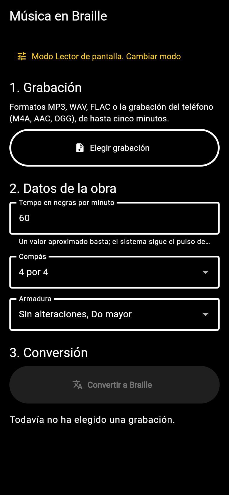
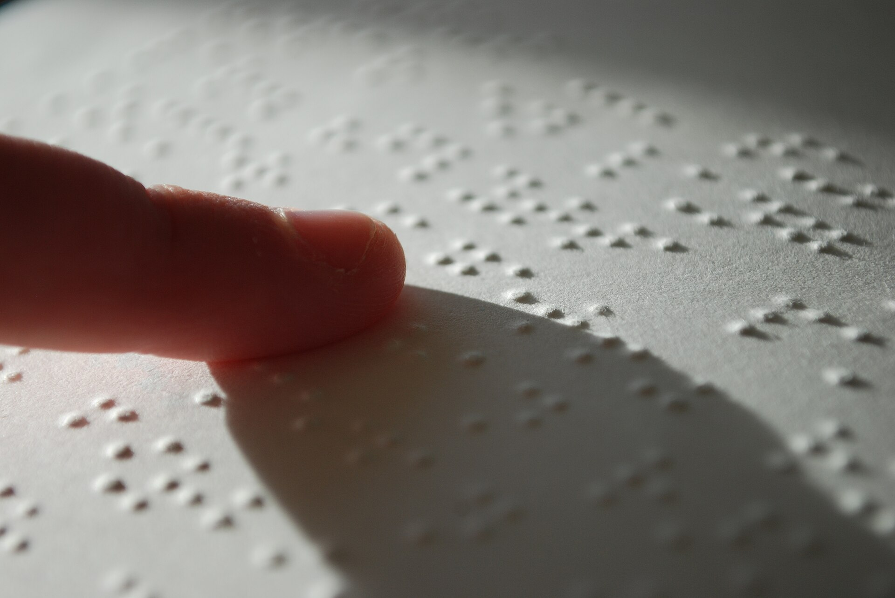
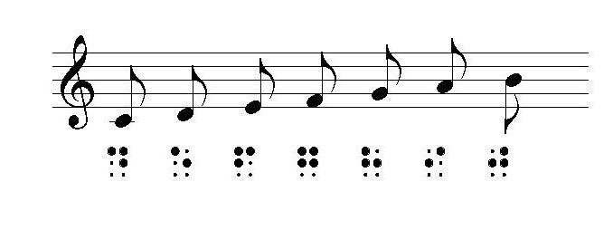
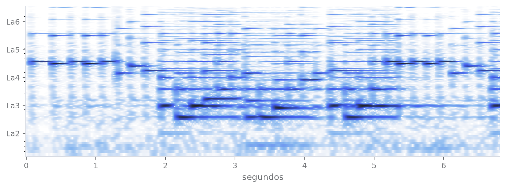
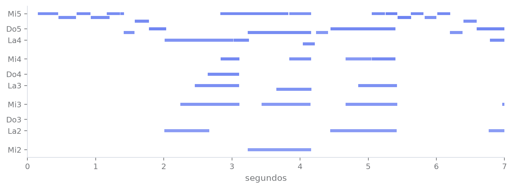
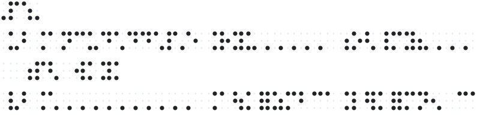
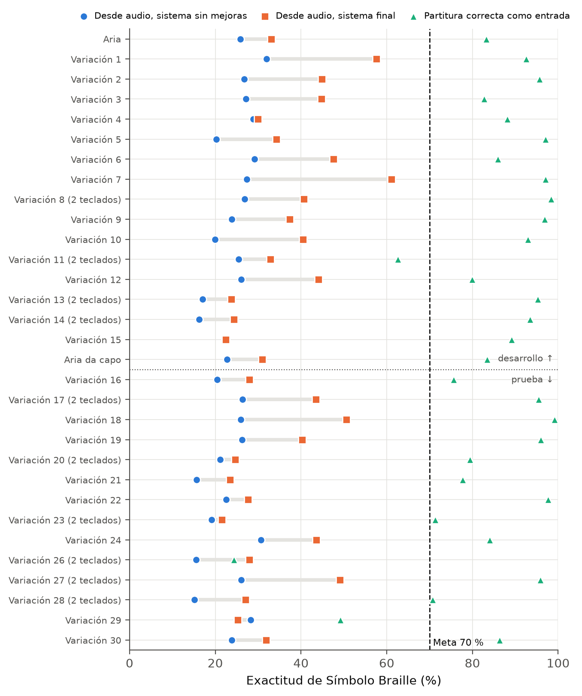

Del audio
al Braille
Transcripción automática de piano polifónico a musicografía Braille con inteligencia artificial y algoritmos deterministas.
Gustavo Adolfo Cruz Bardales



Casi toda la música está grabada.
Casi nada está en Braille.

Una persona ciega que quiere estudiar piano depende de que alguien haya transcrito la obra a musicografía Braille. Ese trabajo lo hace a mano un especialista y tarda semanas.
Mi trabajo construye el tramo que faltaba: de una grabación de piano a un archivo Braille listo para leerse en una línea Braille o imprimirse.
El repertorio en Braille es mínimo
de personas viven con alguna deficiencia visual (Organización Mundial de la Salud, 2019).
del catálogo musical impreso está transcrito a Braille (Giesteira, Godall y Zattera, 2015).
tarda un transcriptor especializado en pasar una obra a musicografía Braille.

Por qué es difícil
La musicografía Braille es lineal y depende del contexto: el signo de octava depende del salto con la nota anterior, las alteraciones valen por todo el compás y las dos manos se alinean compás por compás.
Dos tecnologías que no se hablan
| Alternativa | Parte de | Escribe Braille | Automática | Límite |
|---|---|---|---|---|
| Transcriptor humano | Partitura impresa | Sí | No | Semanas por obra, pocos especialistas |
| BrailleMUSE, GOODFEEL | MusicXML | Sí | Sí | Necesitan una partitura digital que casi nunca existe |
| Onsets and Frames, Kong, MT3 | Audio | No | Sí | Entregan notas en segundos, no una partitura |
| Este trabajo | Audio | Sí | Sí | Une los dos mundos y mide el resultado contra un transcriptor |
Un sistema que escucha y escribe Braille
Objetivo general: desarrollar un sistema de código abierto, usable por personas con discapacidad visual, que convierta grabaciones de piano de hasta cinco minutos en partituras Braille, y determinar qué tan cerca quedan de las de un transcriptor humano.
1. Elegir el modelo
Comparar tres familias de transcripción sobre obras completas.
F1 de nota ≥ 75 %2. Ajustarlo
Hacerlo robusto a ruido, reverberación y micrófono de teléfono.
+5 puntos fuera de estudio3. Traducir
Traductor determinista con las reglas del Manual de Aller Pérez.
28 reglas probadas4. Integrar
De audio a BRF sin intervención y en tiempo razonable.
≤ 1.5 veces la duración5. Medir fidelidad
Comparar con ediciones Braille hechas por personas.
Exactitud ≥ 70 %6. Acceso autónomo
Cliente usable con lector de pantalla en computadora y teléfono.
100 % etiquetadoQué entra y qué no
Alcance
Piano a dos manos, audio MP3, WAV, FLAC o M4A de hasta cinco minutos, 28 reglas de nueve secciones del Manual más la agrupación de semicorcheas, formato compás sobre compás.
Justificación
Devuelve autonomía al estudiante ciego, reduce el costo de tener una obra nueva en Braille y llena el vacío de medición: no existía una métrica contra transcriptores humanos.
Limitantes
Trabajo individual de dieciséis semanas, GPU gratuita con cuota, pocas obras con grabación y Braille de la misma edición, y el modelo no estima tempo, compás ni armadura.
Fuera de alcance: voz y otros instrumentos, ornamentos, matices y pedal en Braille, y estimación automática de tempo, compás y armadura.
Un pipeline de etapas independientes
Cliente
Aplicación web progresiva en Flutter con modos tutor, baja visión y lector de pantalla.
API
FastAPI en un contenedor de Railway: recibe el audio, lo procesa en segundo plano y entrega el BRF.
Calidad
249 pruebas automáticas, integración continua y experimentos reproducibles en Kaggle con GPU.
Cómo está construido
Quién lo usa y qué entrega
La persona solo aporta la grabación y tres datos de la obra: tempo, compás y armadura. Todo lo demás ocurre dentro del sistema.
Dónde corre cada parte
El cliente es estático y la API es un solo contenedor que duerme sin tráfico. La misma imagen corre en una computadora local.
Una conversión de principio a fin
El procesamiento es asíncrono: la aplicación no se congela y el lector de pantalla anuncia cada cambio de estado sin mover el foco.
Un árbol para la partitura y estados para el contexto
Árbol de sintaxis abstracta
- Partituratítulo, compás y armadura
- Mano derechay mano izquierda
- Compásuno o más
- Notaaltura, figura, alteración, ligadura
- Acordevarias notas a la vez
- Silencio
- Compásuno o más
- Mano derechay mano izquierda
Máquina de estados del signo de octava
El estado también guarda las alteraciones vigentes, que se reinician en cada barra de compás.
Für Elise, del sonido a los puntos



Lo que cambié en el camino
Aplicación web, no APK
Un enlace se comparte más fácil y la misma compilación sirve en computadora y teléfono.
Hilos, no cola distribuida
Trabajando solo, prioricé un servicio simple de operar que corre en una computadora local.
Agrupación de semicorcheas
Las ediciones humanas la usan siempre. Sin ella, tres de cada cuatro semicorcheas correctas contaban como error.
Objetivo específico 1 y su resultado
Seleccionar la arquitectura de transcripción
Contrastar al menos tres familias de Transcripción Musical Automática de código abierto sobre obras completas de piano polifónico y elegir la que sirva de base al sistema.
Dos familias cumplen y se eligió Kong
F1 a nivel de nota en 20 obras y 134 minutos de audio. La línea marca la meta de 75 %.
F1 de inicio de nota del modelo elegido
tasa de error de nota
El hFT-Transformer obtuvo 5.6 puntos más, pero no estima el pedal y era más difícil de integrar. Kong quedó a 0.58 puntos de lo que publican sus autores.
Objetivo específico 2 y su resultado
Ajustar el modelo al dominio de uso
Hacer un fine-tuning con grabaciones degradadas por compresión, ruido, reverberación y micrófono de teléfono, y cuantificar la robustez frente al modelo original.
+5.79 puntos en estudio, pero el teléfono resta
F1 a nivel de nota. Gris el modelo original, azul el ajustado.
BSA de 9 obras grabadas en estudio
BSA de las mismas obras grabadas con teléfono
En una habitación con ventilador y lluvia el modelo parte las notas sostenidas: los reataques pasan de 1.2 % a 9 %. La simulación de celular no reproduce ese efecto.
Objetivo específico 3 y su resultado
Traducir con un módulo determinista
Cuantizador rítmico, máquina de estados, árbol de sintaxis, renderizado compás sobre compás y exportador BRF que cubran las reglas del Manual de Aller Pérez.
28 de 28 reglas trazadas y probadas
Pruebas por sección del Manual, las seis secciones con más pruebas.
pruebas en 73 clases
de las reglas con salida Braille esperada
La suite pasa en integración continua con Python 3.10, 3.12 y 3.13. Se agregó la agrupación de la sección IV porque las ediciones humanas la usan siempre.
Objetivo específico 4 y su resultado
Integrar el sistema de punta a punta
Un servicio asíncrono que reciba un audio de hasta cinco minutos y entregue un BRF válido sin intervención humana.
Todas las ejecuciones bajo el límite
Peor cociente entre tiempo de proceso y duración del audio. La línea marca 1.5.
de ejecuciones bajo 1.5 y con BRF válido
tarda la etapa determinista con 5 minutos de audio
El modelo acústico concentra casi todo el tiempo. En Railway fijar los hilos en 2 bajó una grabación de 17 veces su duración a 0.77.
Objetivo específico 5 y su resultado
Medir la fidelidad frente a un transcriptor
Comparar las partituras generadas con ediciones Braille hechas por personas y clasificar todas las desviaciones por categoría sintáctica.
Entre 33.2 % y 46.5 % frente a la meta de 70 %
BSA medio de 57 grabaciones en cinco conjuntos. La línea marca 70 %.
el mismo traductor con la partitura como entrada
puntos que sumaron las mejoras del cuantizador
Ninguna de las 39 piezas de estudio llegó a 70 %; la mejor fue la Variación 7 con 61.1 %. Se clasificaron 45 557 de 45 558 desviaciones.
Objetivo específico 6 y su resultado
Dar acceso autónomo al usuario
Una aplicación web progresiva instalable en computadoras y dispositivos móviles, cuyo flujo de carga, seguimiento y descarga sea operable con lector de pantalla.
Una persona con TalkBack llega sola al BRF
de 226 elementos etiquetados en 42 configuraciones
controles leídos bien por TalkBack
violaciones de axe en 12 auditorías WCAG A y AA
puntaje de accesibilidad de Lighthouse
El recorrido se hizo solo con atajos de teclado y sin mirar la pantalla: elegir el audio, escuchar el estado y descargar el archivo de 388 bytes.
Objetivo general y su resultado
Construir el sistema y saber qué tan cerca queda
Un sistema de código abierto, operable por personas con discapacidad visual, que convierta grabaciones de piano de hasta cinco minutos en partituras Braille, y determinar en qué medida se aproximan a las de un transcriptor humano.
Cuatro objetivos cumplidos, uno parcial y uno no
objetivos específicos cumplidos
grabaciones medidas contra Braille hecho por personas
BSA en piezas nunca vistas
BSA con la partitura correcta
La respuesta a la pregunta de investigación: el sistema funciona de punta a punta y su distancia al transcriptor está medida y localizada antes del traductor.
Pruébalo desde el teléfono
Demostración
Conversión de una grabación de 30 segundos de Für Elise con TalkBack activo, desde elegir el audio hasta guardar el BRF.
Materiales
Aplicación web instalable, API publicada, código, manuales del sistema y las mediciones de las 57 grabaciones evaluadas.
Evidencias
Registro frase por frase de lo que dijo TalkBack, auditorías de accesibilidad y video de la conversión de menos de tres minutos.
El traductor funciona.
La pérdida está antes.
Partición de prueba de las Variaciones Goldberg.
Manos que se cruzan
Las variaciones para dos teclados quedan en 31.5 % contra 37.7 % de las de un teclado: el reparto por registro falla en los cruces.
Grabación con teléfono
Las mismas obras bajan de 40.0 % a 26.7 %. El modelo parte notas sostenidas: 9 % de reataques contra 1.2 % en estudio.
Tiempo a figuras
Se conserva 62.9 % de las notas por compás, pero solo 43.2 % en orden y 56.1 % de esas con su figura correcta.
Concluimos
- Es posible ir de una grabación a una partitura Braille sin intervención, en menos tiempo que lo que dura la obra.
- La traducción determinista con las reglas del Manual es correcta: con la partitura adecuada supera la meta de exactitud.
- El cuello de botella es la transcripción y su conversión a figuras, no el Braille.
- El ajuste fino funciona en condiciones simuladas, pero no alcanza para grabaciones caseras con teléfono.
- Una interfaz accesible desde el diseño permite completar el flujo con lector de pantalla.
Dónde invertir el siguiente esfuerzo
Unir fragmentos de una nota
Un filtro que una ataques repetidos de la misma tecla, ajustado con la partición de desarrollo. Ataca la causa medida en teléfonos.
Ajuste con grabaciones reales
Grabar con teléfono mientras un piano digital registra el MIDI, para tener pares reales de entrenamiento.
Reparto de manos aprendido
Un clasificador pequeño entrenado con partituras donde cada nota tiene su mano, en lugar de reglas de registro.
Evaluación con personas
Sesiones con estudiantes ciegos de piano y un docente, leyendo el BRF en una línea Braille.
Cómo cerraría la distancia
Dónde se pierde la exactitud hoy
Etapa donde se pierde exactitudReferencia que sí cumple la meta
El pipeline con las etapas nuevas
Etapa acústica
Etapa simbólica
Etapa nuevaEtapa que ya existe
La arquitectura para muchos usuarios
El pipeline no guarda estado, así que pasa casi sin cambios a ser la tarea de cada trabajador.
La prueba que más falta: con personas
El BSA dice cuánto se parece la partitura. Solo una persona lectora puede decir si con ese parecido ya se puede estudiar.
Lo que queda abierto
- Lector de pantalla de escritorio. Probar con NVDA, VoiceOver y Orca; hoy la computadora se valida con pruebas automáticas.
- Tempo, compás y armadura automáticos. Hoy los indica la persona usuaria.
- Voces y ligaduras por tipo de obra. Ayudan en contrapunto y empeoran en melodía con acompañamiento.
- Seguridad para uso público. Límite de peticiones, usuario sin privilegios en el contenedor y borrado de archivos por tiempo.
Gracias
Salió bien
Un sistema completo, medido y publicado, y una métrica para comparar contra transcriptores.
Cambiaría
Grabar antes las pruebas con teléfono, para ajustar el modelo con audio real desde el inicio.
Aprendí
A medir antes de decidir: cada pivote salió de un dato, no de una intuición.
A mi asesor Luis Alberto Suriano Saravia, a la Universidad del Valle de Guatemala y a quienes publican datos abiertos como MAESTRO, Open Goldberg Variations y BrailleOrch.
Preguntas frecuentes
Material de apoyo para la ronda de preguntas. En modo presentación se muestra con la tecla R.
5 USD al mes
| Concepto | Costo | Nota |
|---|---|---|
| Kaggle, GitHub, Pages, datos y software | 0 USD | Gratuitos y abiertos |
| Railway, plan Hobby | 5 USD al mes | Incluye 5 USD de uso; despierto todo el mes serían cerca de 12 USD |
| Una grabación de cinco minutos | 0.004 USD | 2 vCPU y 1.5 GB durante unos tres minutos |
| Alternativa sin costo | 0 USD | Computadora local, o Hugging Face Spaces con 2 vCPU y 16 GB |
Escala hacia arriba y hacia cero
Hoy
Cliente-servidor con una API de tuberías y filtros. Escala verticalmente: de 1.21× con 2 núcleos a 0.08× con GPU. El contenedor duerme sin tráfico. El modelo se carga una vez por proceso y se inyecta con una fábrica.
Siguiente paso
Escalar horizontalmente moviendo los trabajos a Redis o PostgreSQL, los archivos a almacenamiento de objetos y el procesamiento a trabajadores con Celery. El pipeline no guarda estado, así que no cambia.
Qué mido y dónde
| KPI | Meta | Actual |
|---|---|---|
| Exactitud de Símbolo Braille en prueba | 70 % | 33.2 % |
| Tiempo entre duración del audio | ≤ 1.5 | 0.72 en Railway |
| BRF válidos | 100 % | 100 % |
| Memoria frente al límite | < 80 % | 92 %, 1.83 de 2 GB |
| Violaciones WCAG A y AA | 0 | 0 |
Cada trabajo de la API guarda su latencia y su validación. Propongo un monitor externo de /health y repetir los scripts de medición en cada liberación.
Riesgo bajo para un prototipo
Ya tiene
HTTPS, CORS restringido al cliente, formatos permitidos, límite de 100 MB, identificadores aleatorios, ningún dato personal guardado y modelo verificado con su hash.
Le falta
Autenticación y límite de peticiones, usuario sin privilegios en el contenedor, borrado de archivos por tiempo y análisis de vulnerabilidades en la integración continua.
ITIL y DevOps en pequeño
Incidente
La conversión en Railway tardaba 17 veces la duración. Causa: PyTorch abría 32 hilos para 2 vCPU. Solución: OMP_NUM_THREADS=2, y bajó a 0.77.
Cambios
Ramas dev, docs y main, pruebas automáticas en cada cambio y publicación del cliente solo desde main.
Continuidad
Todo es reproducible: código, modelo con su hash en un release, notebooks en Kaggle y la misma imagen corre en cualquier nube o en local.
Las 31 piezas de Goldberg
